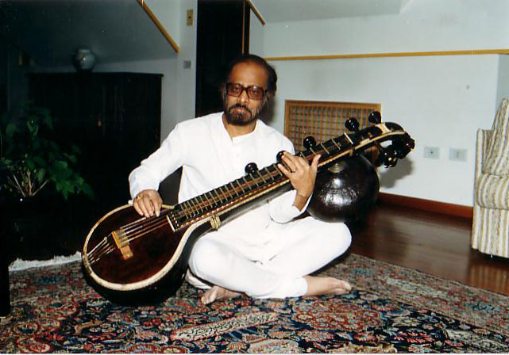

Hintergrund Background
Vemu Mukunda und die Entwicklung des Nadabrahma Systems — wissenschaftlich, spirituell, musikalisch. Vemu Mukunda and the development of the Nadabrahma System — scientific, spiritual, musical.

Der GründerThe Founder
Vemu Mukunda
1929 — 2000
Vemu (Venugopal) Mukunda wurde am 11. März 1929 in der südindischen Stadt Bangalore (Bengaluru) geboren. Er genoss eine brahmanische Ausbildung, in deren Rahmen er auch in der traditionellen südindischen Musik Karnatika ausgebildet wurde. Später führte ihn das Studium der Nuklearwissenschaft an die Strathclyde University in Glasgow, wo er anschließend weiter als Atomingenieur arbeitete.
Nach einigen Jahren gab er diese Tätigkeit auf, verlegte seinen Wohnsitz nach London und widmete sich ganz der Musik. Auf seiner Vina (südindisches Saiteninstrument, ähnlich der Sitar) konzertierte er in Indien und vielen westlichen Ländern. Er arbeitete mit vielen Größen der damaligen Musikszene zusammen und gehörte zu den ersten Musikern, die die indische Musik mit dem Jazz miteinander verbanden.
Auf Anweisung seines spirituellen Lehrers Sri Sathya Sai Baba vertiefte er sich seit Beginn der 1970er Jahre in die philosophischen und musikalischen Schriften seines Landes. Ziel war es, die verborgenen Informationen von den tonalen Verbindungen zwischen Mensch und Ton zu entdecken. Dabei erfuhr er die spirituelle Dimension der Töne als Weg der Selbsterkenntnis.
Er bündelte und systematisierte sein Wissen unter dem Begriff Nadabrahma System. Parallel dazu entwickelte er effektive Übungen zur Entfaltung der Persönlichkeit auf der Basis des Persönlichen Grundtons. Ab den späten 1980er Jahren gab Vemu Mukunda dieses Wissen unter dem Namen Nadabrahma Music Therapy weiter.
Vemu Mukunda war sich bewusst, wie umfangreich und weitreichend die gesamte Thematik rund um das Körper-Ton-Verhältnis ist. Deshalb ermutigte er seine Schüler, tiefer in diese Welt einzutauchen. Er motivierte sie mit der Aussage: 'I only did the first step, you have to continue.'
Am 4. Februar 2000 verstarb Vemu Mukunda in seiner Wahlheimat London. Sein Vermächtnis lebt fort in der Arbeit seiner Schüler.
Vemu (Venugopal) Mukunda was born on March 11, 1929, in Bangalore (Bengaluru), a city in southern India. He received a brahmanical education, which included training in traditional South Indian music, Karnatika. Later, his studies in nuclear science led him to Strathclyde University in Glasgow, where he subsequently worked as a nuclear engineer.
After several years, he left this profession, moved to London, and devoted himself entirely to music. He performed on his Vina (a South Indian stringed instrument similar to the sitar) throughout India and many Western countries. He collaborated with many prominent figures in the music scene and was among the first musicians to combine Indian music with jazz.
At the instruction of his spiritual teacher Sri Sathya Sai Baba, from the early 1970s onward he immersed himself in the philosophical and musical writings of his homeland. The goal was to discover the hidden information about the tonal connections between human beings and sound. In this process, he experienced the spiritual dimension of tones as a path of self-knowledge.
He synthesized and systematized his knowledge under the term Nadabrahma System. In parallel, he developed effective exercises for personality development based on the Personal Fundamental Tone. From the late 1980s onward, Vemu Mukunda taught this knowledge under the name Nadabrahma Music Therapy.
Vemu Mukunda was aware of how comprehensive and far-reaching the entire subject of the body-tone relationship was. Therefore, he encouraged his students to delve deeper into this world. He motivated them with the statement: 'I only did the first step, you have to continue.'
On February 4, 2000, Vemu Mukunda died in his adopted home of London. His legacy continues in the work of his students.
Das Nadabrahma System The Nadabrahma System
Philosophische GrundlagenPhilosophical Foundations
Nāda brahmā ist eine Begrifflichkeit aus der vedischen Philosophie. Sie erklärt grundlegend, dass die Ursache aller Manifestationen das Phänomen Schwingung ist. In Bezug dazu entdeckte Vemu Mukunda das Wissen vom frequenzbezogenen Aufbau des Menschen und das daraus resultierende physikalische Körper-Ton-Verhältnis.
Das Wort sama hat im Sanskrit verschiedene Bedeutungen:
- sāma oder saama: 'sa' steht für Stimme, 'ama' für Leben
- sama: gleich, ähnlich, gleichmäßig, gleichbleibend
- śama oder shama: innere Stille, Ruhe, Frieden, Gleichmut
Nāda brahmā is a term from Vedic philosophy. It fundamentally explains that the cause of all manifestations is the phenomenon of vibration. In relation to this, Vemu Mukunda discovered knowledge about the frequency-related structure of human beings and the resulting physical body-tone relationship.
The word sama has various meanings in Sanskrit:
- sāma or saama: 'sa' for voice, 'ama' for life
- sama: equal, similar, uniform, constant
- śama or shama: inner silence, peace, tranquility, equanimity
Die tonale Struktur des MenschenThe Tonal Structure of Human Beings
Sein Nadabrahma System beschreibt den Menschen als einen Klangkörper aus drei Oktaven, gestimmt auf die Frequenz des Persönlichen Grundtons. Grundlage für die Kraftentfaltung der einzelnen Töne ist das physikalische Gesetz der Resonanz. Dies besagt, dass ausschließlich gleiche Frequenzen sich gegenseitig Kraft übertragen können.
Die Kernaussagen des Nadabrahma Systems lauten:
- Der Mensch schwingt in einem Spektrum von drei Oktaven.
- In jedem der drei Oktavbereiche befinden sich alle zwölf Töne.
- Vom physischen Körper ausgehend, durchschwingen die Töne auch alle feinstofflichen Körper über gleichfrequente Resonanzpfade.
- Diese Struktur gilt für alle Menschen, aber sie sind nicht alle gleich gestimmt.
- Der Persönliche Grundton ist individuell beschaffen und muss einzeln und sorgfältig ermittelt werden.
- Ausgehend vom Persönlichen Grundton wird die tonale Grundstruktur individuell mit ihren Tonhöhen ausgefüllt.
His Nadabrahma System describes the human being as a resonant body composed of three octaves, tuned to the frequency of the Personal Fundamental Tone. The basis for the power unfolding of individual tones is the physical law of resonance, which states that only frequencies of the same wavelength can transfer force to one another.
The core principles of the Nadabrahma System are:
- Human beings vibrate within a spectrum of three octaves.
- Within each of the three octave ranges exist all twelve tones.
- Starting from the physical body, the tones resonate through all subtle bodies via frequency-matching resonance pathways.
- This structure applies to all people, but they are not all tuned the same.
- The Personal Fundamental Tone is individual and must be identified carefully and precisely.
- Starting from the Personal Fundamental Tone, the tonal fundamental structure is individually filled with its pitch frequencies.
Weiterentwicklung und ErweiterungFurther Development and Expansion
Durch das frühzeitige Lebensende von Vemu Mukunda im Jahre 2000 wurde der unmittelbare Zustrom an Wissen blockiert. Dank geistiger Inspiration öffnete sich das Nadabrahma System weiter aus sich heraus. Somit konnten in der Folgezeit damals bestehende Wissenslücken aufgefüllt werden.
Viele substantielle Informationen sind aufgetaucht, die das Nadabrahma System in seiner Fülle und Schönheit bereichert und vervollständigt haben. Unter anderem wurden ergänzt:
- Die Typologie aller 12 Töne
- Die genaue Zuordnung der Intervalle zu den körperlichen Organen
- Die konkrete Definition der verschiedenen Emotionen auf den einzelnen Intervallen
- Die tonalen Verbindungslinien zwischen Körper und Gemüt
- Die tiefe Wirkung der Grundtonübung auf das Gemüt
- Zusätzliche Skalen und mentale Übungen (Spiralen)
- Die differenzierte Betrachtung der Messdaten bei einer Grundtonmessung
Through Vemu Mukunda's early death in 2000, the direct flow of knowledge was interrupted. Through spiritual inspiration, the Nadabrahma System continued to unfold from within itself. This allowed previously existing knowledge gaps to be filled over time.
Many substantial pieces of information have emerged that enriched and completed the Nadabrahma System in its fullness and beauty. These include:
- The typology of all 12 tones
- The precise assignment of intervals to physical organs
- The concrete definition of different emotions on individual intervals
- The tonal connections between body and mind
- The deep effect of fundamental tone practice on the mind
- Additional scales and mental exercises (spirals)
- The differentiated analysis of measurement data in fundamental tone identification
AngebotOur Offer
Erfahren Sie, wie SaMa Sonologie® zur Entdeckung und Aktivierung des Persönlichen Grundtons führt.Learn how SAMA Sonology® guides you to discover and activate your Personal Fundamental Tone.